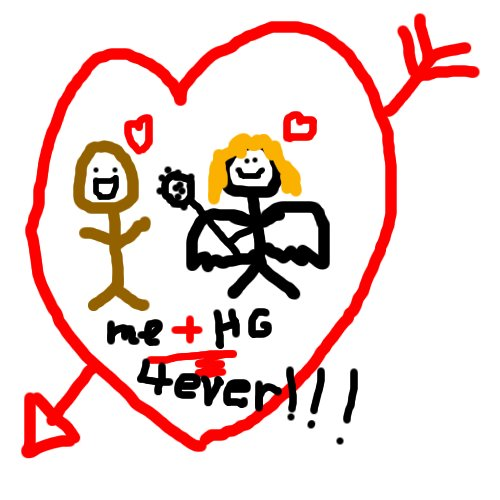

In our final installment of AndrewApproved comic book characters, we bring you Hawkgirl! “She’s my favorite in the Justice League,” remarks Andrew. “I wish I could go to sleep at night with Hawkgirl hugging me with her wings. They’re beautiful.”
When Hawkgirl was kicked out of the Justice League in an animated series episode, Andrew was devastated. “I thought she was going to be gone forever.” In a later season, she returned. “When she came back in the next season, she wasn’t wearing her mask and I thought she was absolutely spectacular!” giggled Andrew. “I think they underplayed Hotgi… Hawkgirl’s powers in the cartoon because she’s obviously much more powerful than the rest of the Justice League,” he comments.
Andrew has been seen drawing pictures of Hawkgirl on his notes with a heart around her. Though we have been unable thus far to obtain a photo of this, we have an artist’s rendition of it based on eye-witness accounts:

Final installment? But the world must know about Andrew’s undying passion for Booster Gold!
comment by Mark — October 20, 2006 @ 5:37 pm
Oh, Mark is very true… how could I forget Booster Gold!!!?!?!
ok, there well be a correction.
comment by Oliver — October 20, 2006 @ 9:18 pm
Dangit, why’d you have to say anything Mark.
comment by Andrew — October 21, 2006 @ 12:43 am
and look how brown he is!!!
comment by nancy — October 22, 2006 @ 1:29 pm
gay
comment by amy — June 10, 2007 @ 5:50 am
OY YOU GO AND SLEEP W?TH WONDERWOMAN CAUSE ?M GONNA SLEEP WITH GORGEUOS HOT HAWKG?RL AND WHEN ? DO ? AM GONNA TELL HER TO TAKE HER OUT S?DE CLOTHES OFF AND ?M GONNA TAKE HER BRAW AND UNDERWEAR OFF MYSELF SO THERE!
comment by James — May 5, 2008 @ 7:14 am
YOU NASTIES!
she isnt even real.
you guys had your little fantasies
with someone who isn;t even reall,,,
if she was then she would never like yall
shed be like f*** you!
comment by Nelly — October 16, 2008 @ 10:48 am